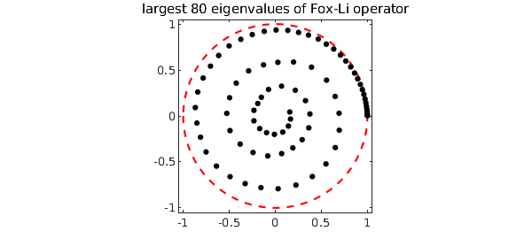

In the field of optics, integral operators arise that have a complex symmetric (but not Hermitian) oscillatory kernel. An example is the following linear Fredholm operator $L$ associated with the names of Fox and Li (also Fresnel and H. J. Landau):
$$ v(x) = \sqrt{iF/\pi} \int_{-1}^1 K(x,s) u(s) ds. $$
$L$ maps a function $u$ defined on $[-1,1]$ to another function $v = Lu$ defined on $[-1,1]$. The number $F$ is a positive real parameter, the Fresnel number, and the kernel function $K(x,s)$ is
$$ K(x,s) = \exp(-iF(x-s)^2). $$
To create the operator in Chebfun, we define the kernel and use the fred function to build $L$:
F = 64*pi; % Fresnel number K = @(x,s) exp(-1i*F*(x-s).^2 ); % kernel L = sqrt(1i*F/pi) * chebop(@(u) fred(K,u)); % Fredholm integral operator
Computing the $80$ eigenvalues of largest complex magnitude requires just a call to eigs with the 'lm' option:
tic, lam = eigs(L,80,'lm'); toc
Elapsed time is 12.525234 seconds.
Finally, a beautiful pattern emerges when we plot the results:
x = chebfun('x');
clf, plot(exp(1i*pi*x),'--r','linewidth',1.6)
hold on, plot(lam,'k.','markersize',14)
title('largest 80 eigenvalues of Fox-Li operator','fontsize',16)
axis equal, axis(1.05*[-1 1 -1 1]), hold off

For a remarkable analysis of such patterns, see [1].
References
-
A. Boettcher, H. Brunner, A. Iserles and S. P. Norsett, On the singular values and eigenvalues of the Fox-Li and related operators, New York Journal of Mathematics, 16 (2010), 539-561.
-
T. A. Driscoll,
, Journal of Computational Physics, 229 (2010), 5980-5998. -
A. G. Fox and T. Li, Resonant modes in a maser interferometer, Bell System Technical Journal, 40 (1961), 453-488.
-
L. N. Trefethen and M. Embree, Spectra and Pseudospectra: The Behavior of Nonnormal Matrices and Operators, Princeton University Press, 2005 (Chapter 60).